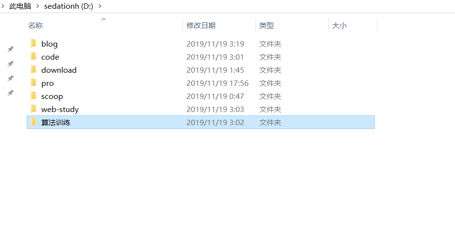
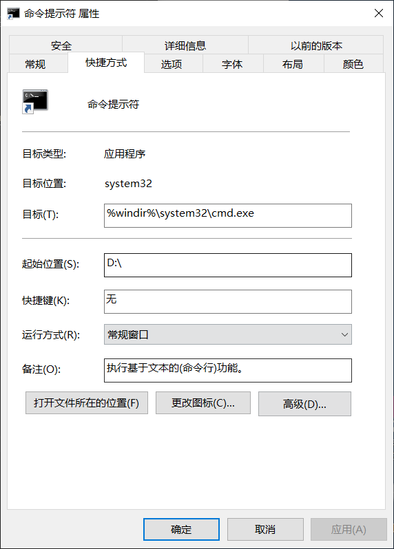
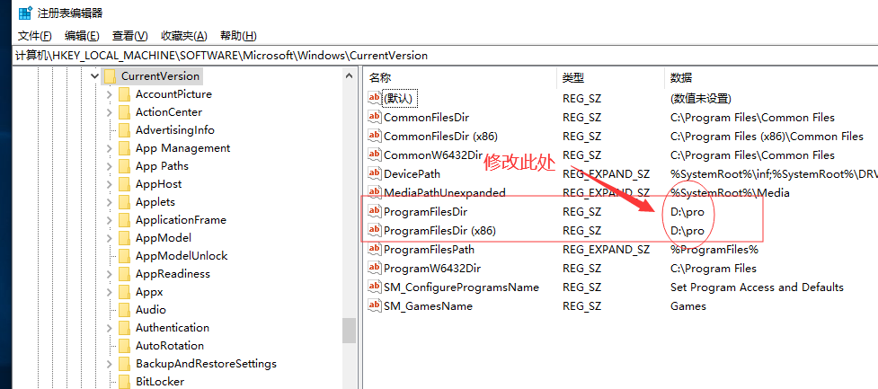

背景
万般不情愿，还是换回了win，毕竟一个大显示器放在旁边不用也是太难受了，而且大的显示器对我帮助很大，只能换回来了，黑苹果不能使用独显，而我的笔记本只能用独显外界显示器
管理策略
一段macos的使用帮助了我很多，关于新的系统管理我也想使用一样的设计理念
- c盘不用，只用来放系统
- d盘作为日常根使用盘，相当于mac下的用户目录
- 文件都下载到一个位置
- 软件的安装分为两个方面
- 类似php，java,git…的安装，需要配置环境 -> 使用scoop放到scoop文件夹下
- 有图像化操作窗口的，和需要快捷win支持的，自己手动下载，放到pro下
- 日常的学习文件直接放在根目录下
下面是效果图

scoop管理工具
发现scoop真是意外之喜，Scoop是win下的包管理器，类似homebrew(真是太想念它了，5555)，适合用来配置开发环境
scoop不仅轻量，可以直接装到我们的指定目录下，不需要申请管理员权限也不会污染系统环境变量
下面记录一下安装
我的方案是不管是不是全局，都放到一个文件夹下，我不会用scoop下载过多的工具软件，因为不方便在win下的操作，比如利用scoop下载的bandzip没法快捷压缩文件等等的问题，还是自己手动去下载方便
[environment]::setEnvironmentVariable('SCOOP','D:\scoop','User') |
在scoop里面，bucket就是一个软件仓库，默认的仓库里有些软件是没有的，我们要添加一些bucket(之前需要先安装git)
scoop install git |
这样就可以安装你想要的工具了
参考:
https://sspai.com/post/52710
命令行和软件安装默认位置
不想再去折腾命令行了，就这么用吧
效果：
win+1 打开cmd直接默认是开始是d:
实现方法：
打开一个cmd 固定到底部 关闭 再打开 右键设置其属性

软件安装的时候总是默认c，很麻烦，直接修改注册表
win+r regedit

好用软件
- everything 搜索电脑文件
- wox 快速启动工具，搭配everything是真的爽
- ditto 复制粘贴增强，可以查看复制记录
总结
换回来感觉win好像也不是不可以哦，学会了一些新的东西来帮助我管理系统，这段经历也不算白折腾，对自己的电脑必须要求强迫症，要不以后有你难受的。